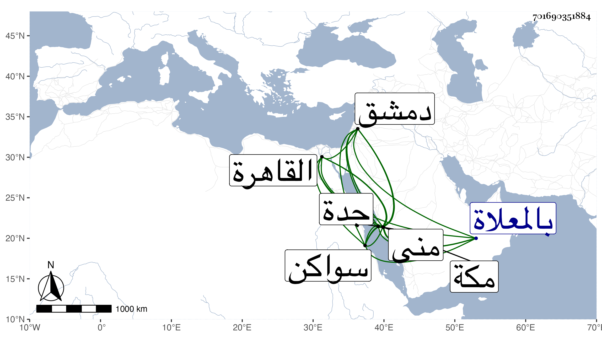

0902Sakhawi.DawLamic.ITO20230111-ara1.EIS1600.701690351884
Biography ID: 701690351884
172
محمد الكمال أبو الفضل أخو الذي قبله ووالد أبي السعود ومحمد الآتي ، ولد في يوم الجمعة عاشر ذي الحجة سنة ست وتسعين وسبعمائة بمنى ونشأ بمكة في كنف أبيه فأحضره في الثانية علي الشمس بن سكر أشياء وسمع الكثير على ابن صديق الزين المراغي ومحمد بن عبد الله البهنسي والشهاب بن مثبت والجمال بن ظهيرة والزين الطبري وابن سلامة وابن الجزري والشمس الشامي في آخرين ، وأجاز له أبو هريرة بن الذهبي وأبو الخير بن العلائي والتنوخي وابن أبي المجد وابن الشيخة وخلق، وحدث سمع منه الفضلاء وأكثروا عنه بأخرة وصار خاتمة مسندي مكة ، أجاز لي ما سمعت عليه شيئا مع كثرة لقي له المجاورة الثانية وكان قد تفقه بوالده والشهاب الغزي ، ودخل القاهرة ودمشق وناب في القضاء بجدة عن غير واحد وأخذ من قضاة مكة وغيرهم وكذا ناب يسيرا في امامة المقام ودخل سواكن وتزوج بها وولد لهِ فيها بل ولي قضاءها ، وينسب مع هذا لتزيد بحيث بالغ بعضهم فقال المعروف بمسيلمة الحرمين . مات في ظهر يوم الخميس منتصف ذي القعدة سنة ست وسبعين بمكة ودفن بالمعلاة رحمه الله وعفا عنه .
